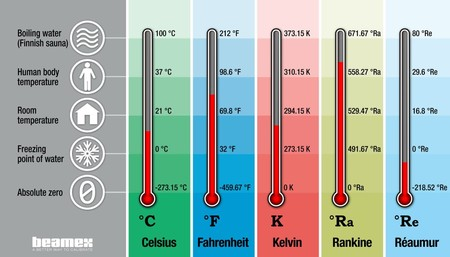
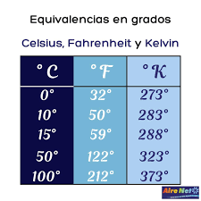

Fisica
Grados Kelvin, Fahrenheit y Celsius.
Fahrenheit
Daniel Gabriel Fahrenheit (1686-1736) fue un físico alemán que inventó el termómetro de alcohol en 1709 y el termómetro de mercurio en 1714. La escala de temperatura Fahrenheit fue desarrollada en 1724. Originalmente, Fahrenheit estableció una escala en la que la temperatura de una mezcla de hielo-agua-sal estaba fijada a 0 grados. La temperatura de una mezcla de hielo-agua (sin sal) estaba fijada a 30 grados y la temperatura del cuerpo humano a 96 grados. Usando esta escala, Fahrenheit midió la temperatura del agua hirviendo a 212°F en su propia escala. Más tarde, Fahrenheit ajustó el punto de congelamiento del agua hirviendo de 30°F a 32°F, haciendo que el intervalo entre el punto de ebullición y el de congelamiento del agua fuera de 180 grados (y haciendo que la temperatura del cuerpo fuese la familiar de 98.6°F). Hoy en día, la escala Fahrenheit sigue siendo comúnmente usada en Estados Unidos.
Celsius
Anders Celsius (1701-1744) fue un astrónomo suizo que inventó la escala centígrada en 1742. Celsius escogió el punto de fusión del hielo y el punto de ebullición del agua como sus dos temperaturas de referencia para dar con un método simple y consistente de un termómetro de calibración. Celsius dividió la diferencia en la temperatura entre el punto de congelamiento y de ebullición del agua en 100 grados (de ahí el nombre centi, que quiere decir cien, y grado). Después de la muerte de Celsius, la escala centigrada fue llamanda escala Celsius y el punto de congelamiento del agua se fijo en 0°C y el punto de ebullición del agua en 100°C. La escala Celsius toma precedencia sobre la escala Fahrenheit en la investigación científica porque es más compatible con el formato basado en los decimales del Sistema Internacional (SI) del sistema métrico. Además, la escala de temperatura Celsius es comúnmente usada en la mayoría de paises en el mundo, aparte de Estados Unidos.
Kelvin
La tercera escala para medir la temperatura es comúnmente llamada Kelvin (K). Lord William Kelvin (1824-1907) fue un físico Escosés que inventó la escala en 1854. La escala Kelvin está basada en la idea del cero absoluto, la temperatura teóretica en la que todo el movimiento molecular se para y no se puede detectar ninguna energía (ver la Lección de Movimiento). En teoría, el punto cero de la escala Kelvin es la temperatura más baja que existe en el universo: -273.15ºC. La escala Kelvin usa la misma unidad de división que la escala Celsius. Sin embargo vuelve a colocar el punto zero en el cero absoluto: -273.15ºC. Es así que el punto de congelamiento del agua es 273.15 Kelvins (las graduaciones son llamadas Kelvins en la escala y no usa ni el término grado ni el símbolo º) y 373.15 K es el punto de ebullición del agua. La escala Kelvin, como la escala Celsius, es una unidad de medida estandard del SI, usada comúnmente en las medidas científicas. Puesto que no hay números negativos en la escala Kelvin (porque teoricamente nada puede ser más frío que el cero absoluto), es muy conveniente usar la escala Kelvin en la investigación científica cuando se mide temperatura extremadamente baja.
